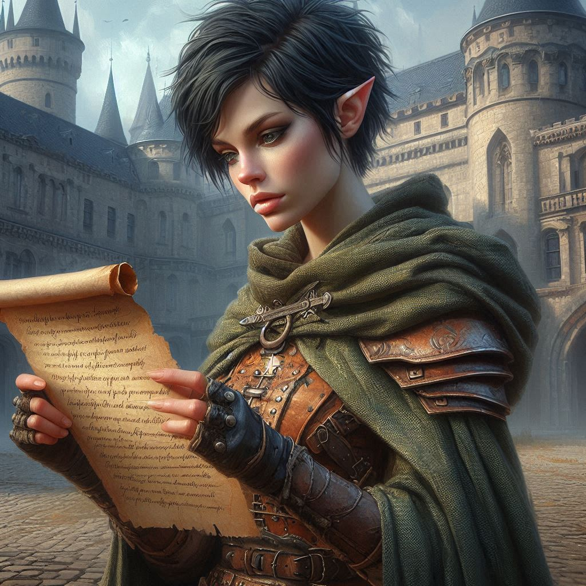
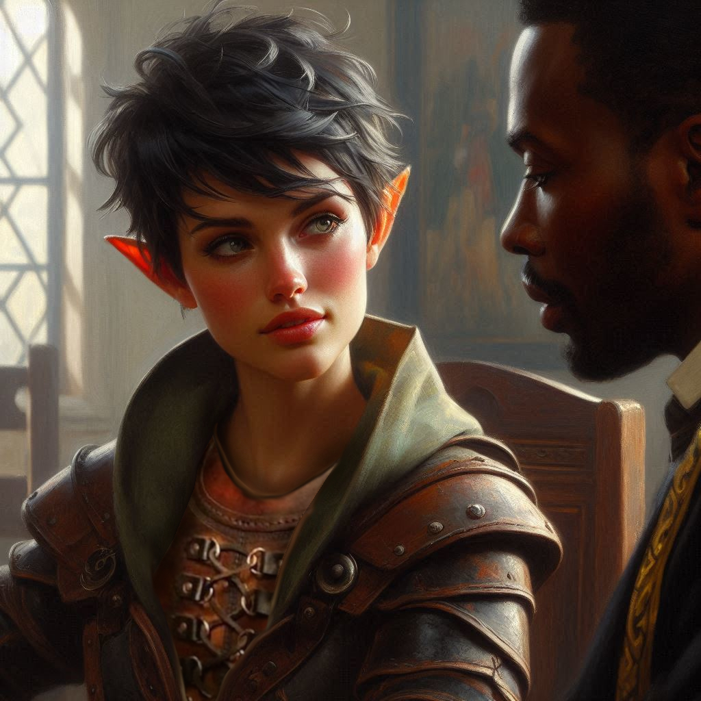
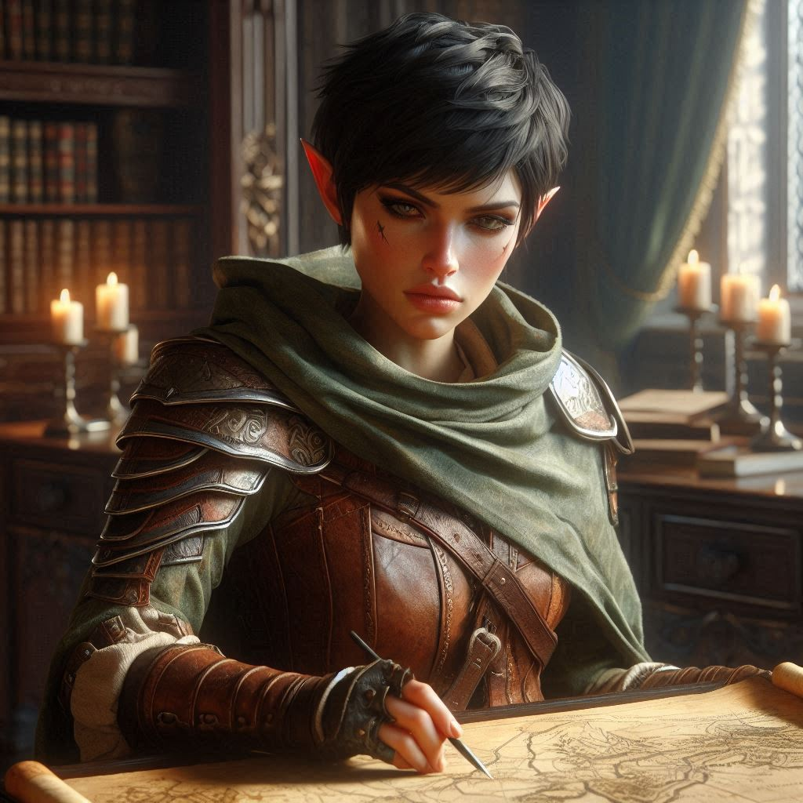

The Magistrate of Belladonna
You look around the courtyard of the Ranger’s Guild, a modest building on the outskirts of Belladonna Township. Some of your fellow rangers, all men, laugh and hurl a few playful insults at you as your next opponent steps into the sparring ring.
“Hey, girly, you think you can take on Trunkie?” one of the men calls out from behind the side rails of the sparring ring. You flex your grip on your wooden sparring sword. The man who enters the ring across from you, Trunkie, is a giant of a man. His legs are like tree trunks and his arms are like the gnarled branches of an old oak tree. You suspect this is where he got his nickname.
“Be nice, Marco,” another man jeers. “Keep making fun of the lass, and you’ll have to contend with her boyfriend!”
“Who? That pretty boy Elias?” Marco retorts indignantly. “I could best Elias with one arm tied behind my back!” Marcos laughs obnoxiously and most of the other men around the courtyard add their hoots and hollers to the din.
The taunts are meant to distract and disrupt you. You feel yourself flush at the mention of Elias’s name. Elias is a fellow ranger, and a damn good one at that. You suspect Marco would not be so bold if Elias were here today. Thankfully, he is not. Elias is probably your best friend here at the guild–certainly he is your most trusted partner when you’re on assignment. The two of you have captured more bounties in the last six months than most of the other rangers put together. Marco and Trunkie and the rest of the boys are just jealous, you tell yourself.
“Well, girly, what ya waiting for?” Trunkie growls. His wooden sparring sword is enormous. It’s fashioned after a great, two-handed broadsword. You estimate that it is almost as long as you are tall. His reach is significantly longer than yours. You know instinctively that you’re going to have to get inside his reach and disable him quickly before he lands a blow. Even with a sparring sword, one strike from Trunkie’s huge weapon would probably knock you down and leave a mark, even through your rugged leather armor.
“Hey, Trunkie,” you say, trying to keep your voice even, twirling your short sword nervously as you assess Trunkie’s footing. “Tell me again how you got that nickname?”
Trunkie smiles lewdly. “I’ll show you after I pound you to the ground,” Trunkie calls. Judging by his stance and the slight stutter in his footing, you expect he is planning on executing the oberhau, an overhead attack with the intention of splitting you in two from head to navel.
“I heard it was because you evacuated your bowels on your first mission right before a big fight,” you say calmly. “Marcos said the log you dropped was the size of a tree trunk, and that’s how you got your name.”
Trunkie shoots Marcos a withering glare. That was the distraction you were hoping for. You race toward him, but his attention is back on you sooner than you hoped it would be. His mighty swing comes straight down toward the top of your head just as predicted. You slide through the dirt toward him on your knees as his enormous sword hits you with a crushing blow. Your tiny short sword absorbs most of the impact over your head as you continue sliding toward Trunkie’s massive feet and legs. The force of the blow sends jarring vibrations through your hands and arms. You stiffen your body, letting the momentum of Trunkie’s strike propel you toward him. You arch your back as you slide under his legs. The point of his broadsword forces the tip of your sword into the dirt somewhere behind your head as your shoulder blades hit the ground. You keep sliding through the dust and bring your sword upward, smacking Trunkie sharply in his unprotected groin as you come to a stop between his feet. You do not take the time to appreciate the jeers from the onlookers as you roll to the side, avoiding one of Trunkie’s giant boots as he tries to step on your head. Like a cat, you crouch and spring upward onto his back, drawing your sparring blade across his throat without mercy.
Trunkie roars with fury at being defeated by a puny half-elf female ranger who has only been a member of the guild for a little over a year. You jump from his back and roll to the side as he takes another swing at you, even though he is clearly out of play. You vault over the railing of the sparring ring and somersault through the air over Marcos and the other guys just as Trunkie comes crashing through the rails and into the crowd. It takes four men to calm him down as you back away.
You hear slow clapping from somewhere behind you. At first you think it is just the echo of your heartbeat off the courtyard walls, but you calm your breathing and look over your shoulder. A messenger is leaning against the courtyard wall with a parchment under one arm. He continues to clap as he looks at you appraisingly.
“You must be Kira Coldspring,” the messenger says. He hands you the small scroll. “Message from His Honorable Magistrate Pinkarton.”
You open the scroll and read it. It only contains two sentences: Come to Town Hall immediately. Come alone.
This could be the break you’ve been waiting for. Within a few minutes, you open the doors of Belladonna Town Hall and make your way to the magistrate’s office. You stand before His Honorable Pinkarton, Magistrate of Belladonna Township, feeling the weight of his gaze as he measures you. The heavy wooden desk between you is littered with scrolls and letters, but none of them matter—not today. You know why you’re here. You’ve been training for this moment nearly every day for the last two years.
“I assume you’ve heard the stories of Jorsh the Betrayer,” the Magistrate says, his voice cold and calculating. His sharp eyes never leave your face, as if searching for any sign of doubt.
You nod, suppressing a gulp of shock. “I—I know of Jorsh,” you say, quickly regaining your composure.
Pinkerton clears his throat. “Let me fill you in, just in case you’ve missed anything. Jorsh’s name has been whispered in taverns and training halls for months, always with a sense of dread. A sorcerer who betrayed his own people, accused of dabbling in forbidden magic and seeking ancient, forgotten powers.” The Magistrate leans forward.
“I’ve heard of him,” you say cautiously. Could it be that the magistrate is unaware of your past entanglement with Jorsh? You wonder if you should disclose your connection, but then quickly decide that discretion is the better part of valor.
“He was one of us once, a boy from the trading caravans. Now, he’s a threat to the entire kingdom. But I’m not interested in stories. I need someone to bring him to justice.”
You stiffen at the command. You’ve dealt with bandits, tracked wild beasts through forests, even survived a brutal winter on your own. But this is different. This is no ordinary mission—this is your chance to prove yourself as a ranger. To show them all that you’re more than just an orphan taken in by a half-orc blacksmith. You’re Kira Coldspring, a ranger in your own right.
And yet, despite the confidence you try to summon, a sliver of doubt creeps into your mind. You’ve never hunted a sorcerer before. You’ve never faced someone with real magic. Not to mention someone you have a personal history with.
The Magistrate seems to sense your hesitation. “I won’t lie to you. Jorsh is dangerous, and he’s made allies with powers far darker than we’ve ever encountered. But that’s why we need you. No one knows these woods like you do.”
You bite your lip. The old fear rises in your chest—the fear of failure, of not being enough. Of being abandoned again. But you bury it deep. You’ve made it this far on your own. You won’t back down now.
“How much do we know about where he is?” you ask, your voice steadying as you try to focus on the facts.
The Magistrate gestures to a map spread out across the desk. It shows the winding rivers and dense forests of Yew’s northern border. Your eyes scan the familiar landmarks—the vast Hemlock Falls and the treacherous caverns that lie beneath them.
“He was last seen near the Falls,” the Magistrate says, tapping a finger on the map. “There’s reason to believe he’s searching for something there, something ancient. We don’t know exactly what, but rumors say it’s tied to the dark magic he’s been using.”
A cold chill runs down your spine. Hemlock Falls. The name stirs something in you, a memory you can’t quite grasp. It was a place from your childhood, from before… before the blacksmith. Before any real memories of your childhood. You shake it off.
“I’ll bring him in,” you say firmly. You can’t let yourself dwell on the past now. Not with so much at stake.
The Magistrate’s eyes narrow, but he gives a short nod. “Dead or alive, Coldspring. Just make sure he doesn’t escape.”
You feel the weight of those words settle on your shoulders. Capture Jorsh. Bring him back. It sounds so simple, but you know better. The wilderness is unpredictable, and Jorsh knows it as well as you do.
“You leave at first light. Report back to me the moment you find him.” The Magistrate leans back, dismissing you with a wave of his hand. “Good luck, ranger.”
As you step out of the Magistrate’s office and into the fading light of the evening, a familiar figure waits for you at the gate. Elias, your fellow ranger, leans against the stone wall, his arms crossed and a smirk on his face.
“Heard you got yourself a big job,” he says, pushing himself off the wall and falling in step beside you.
You shoot him a look. Elias has always been easygoing, with a playful energy that keeps the tension between you light, even when things get difficult. He’s been by your side through countless hunts, but this time… this time, it’s different.
“Jorsh the Betrayer,” you say, trying to sound nonchalant. But Elias raises an eyebrow.
“Jorsh, huh? The rogue sorcerer. That’s no small task.” He pauses for a moment, glancing at you sideways. “You sure you’re ready for this, Kira?”
It’s a simple question, but it hits harder than you expect. Are you ready? The fear you’ve been pushing aside claws its way back up. You know you should say something witty, brush it off like you always do. But instead, you find yourself asking, “What if I’m not?”
Elias stops, turning to face you. The smirk is gone now, replaced by something more serious. He reaches out and gently places a hand on your shoulder.
“You’ve got this. You’ve been training for years for this moment. And besides…” His grin returns, teasing but warm. “If you mess up, I’ll be right behind you to clean up the pieces.”
You laugh despite yourself, shoving him lightly. “Thanks, but I’m not planning on messing up.”
“I wouldn’t expect anything less.” Elias steps back, his usual charm slipping back into place. “But if you ever change your mind about going it alone, you know where to find me.”
You shake your head. “I have to do this on my own, Elias.”
He nods, understanding, but the worry in his eyes doesn’t fade. You turn away, looking out toward the forest, where the shadows are already stretching long across the ground.
Tomorrow, you’ll head out into those woods. Alone.
Later that night, you lay in your bed in a small cottage near the Ranger’s Guild thinking about the adventure ahead. You’re all packed and ready to go, but there is some unfinished business. You won’t have time to do everything, so you’ll have to make a choice. Part of you wants to visit your adoptive father, Baider the half-orc. He happens to be a respected blacksmith not far from the town square. You have not been close for several years, but something in your gut tells you that you should try to make things right between the two of you before you head out on this mission. The other thing, perhaps more vital to the mission, is to seek out Baider’s old traveling partner, Onyx. Onyx and Baider have been estranged for many years, but you’ve heard stories of how the old dwarf and the blacksmith used to go treasure hunting in Hemlock wilderness. Something tells you the crazy old cleric might have information about whatever Jorsh is looking for.